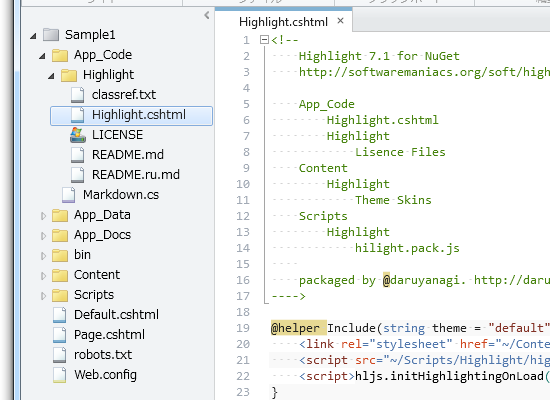
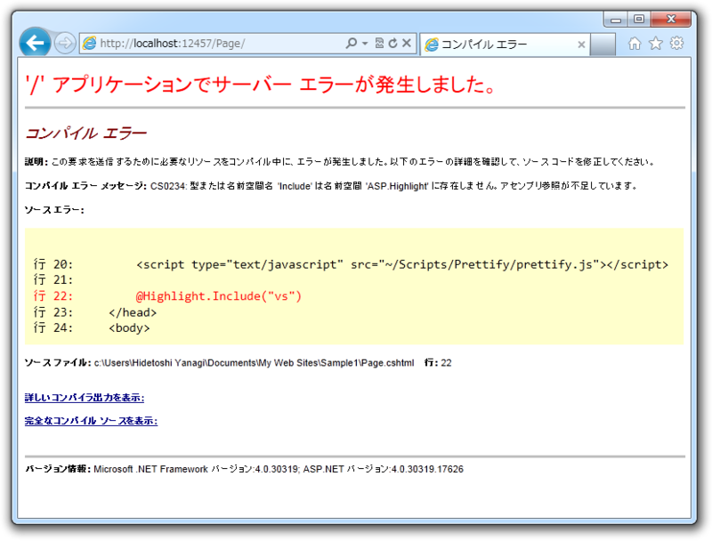

App_Code でサブフォルダーを利用する
公開日：

前回（WebMatrix で Markdown を少しだけ拡張してみる - だるろぐ）、 Hilight.js をこのようなフォルダー構成で配置したの、覚えてますか。
~/ App_Code/ Highlight.cshtml <-- ぇ？ Highlight/ Lisence Files Content/ /Highlight Theme Skins Scripts/ Highlight/ hilight.pack.js
パッとみて「これイケてなくね」って思いません？ Highlight.cshtml は ~/App_Code/Highlight 以下の配置される方がキレイですよね。
~/ App_Code/ Highlight/ Highlight.cshtml <-- こうだろ！ Lisence Files Content/ Highlight/ Theme Skins Scripts/ Highlight/ hilight.pack.js
~/App_Code/ フォルダーっていうのは、「ソースコードを置くだけで自動でコンパイルしてくれる不思議なフォルダー」なのですけど、デフォルト状態ではサブフォルダーまではみてくれないんですね。 Web.config にこのような設定を追加してあげる必要があります。
<?xml version="1.0"?> <configuration> <system.web> <compilation debug="false"> <codeSubDirectories> <add directoryName="Highlight"/> </codeSubDirectories> </compilation> </system.web> </configuration>
~/App_Code/ フォルダーではソースコードの言語を自動判別してくれるのだけれど、サブフォルダーに分ければ異なる言語を混ぜて利用する、なんてこともできるらしい。へぇ、知らなかった。

でも、この方法でサブフォルダーをコンパイル対象に含めても cshtml ファイルの面倒まではみてくれないみたい……。しょうがないので、静的クラスに書き換えてしまおう。
# Highlight.cshtml@helper Include(string theme = "default"){ <link rel="stylesheet" href="~/Content/Highlight/@(theme).css"> <script src="~/Scripts/Highlight/highlight.pack.js"></script> <script>hljs.initHighlightingOnLoad();</script> }
書き換え前。
using System.Web; public static class Highlight { const string STYLE_DIR = "~/Content/Highlight/"; const string SCRIPT_DIR = "~/Scripts/Highlight/"; const string HTML = @"<!-- for Highlight.js support --> <link rel=""stylesheet"" href=""{0}{1}.css""> <script src=""{2}highlight.pack.js""></script> <script>hljs.initHighlightingOnLoad();</script>"; public static HtmlString Include(string theme = "default") { return new HtmlString( string.Format( HTML, VirtualPathUtility.ToAbsolute(STYLE_DIR), theme, VirtualPathUtility.ToAbsolute(SCRIPT_DIR) ) ); } }
書き換え後。ちょっと長くなったけれど、これはそれだけ「ヘルパーがすげえ！」ということにしておいてください。
これでブツがそろったので、今度は NuGet パッケージにして公開しましょうかね（予定）。